Linux is a portable operating system that supports a wide range of computer architectures. Portability refers to how easily—if at all—code can move from one system architecture to another. We know that Linux is portable because it has already been ported to various systems. But this portability did not occur overnight—it requires diligence and a constant eye toward writing portable code. Consequently, it is now easy, relatively speaking, to bring Linux up on a new system. This chapter discusses how to write portable code—the issues you need to keep in mind when writing both core kernel code and device drivers.
Some operating systems are designed with portability as a primary feature. As little code as possible is machine-specific. Assembly is kept to a minimum, and interfaces and features are sufficiently general and abstract so that they work on a wide range of architectures. The obvious benefit is the relative ease with which a new architecture can be supported. In some cases, highly portable and simple operating systems can be moved to a new architecture with just a few hundred lines of unique code. The downside is that architecture-specific features are not supported, and code cannot be hand-tuned for a specific machine. With this design choice, optimal code is traded for portable code. Some examples of highly portable operating systems are Minix, NetBSD, and many academic systems.
On the opposite side are operating systems that trade all portability for highly customized, optimal code. As much as possible, code is written in assembly or otherwise designed for a specific architecture. Kernel features are designed around specific architectural features. Consequently, moving the operating system to a new architecture is tantamount to rewriting the kernel from scratch and, even if possible, the operating system might be ill-suited for use on other architectures. With this design decision, portable code is traded for optimal code. Such systems are often harder to maintain than more portable systems. Of course, these systems need not be more efficient than a more portable system; their willingness to disregard portability, however, allows for a no-compromise design. Microsoft DOS and Windows 95 are two examples of this design decision.
Linux takes the middle road toward portability. As much as practical, interfaces and core code are architecture-independent C code. Where performance is critical, however, kernel features are tuned for each architecture. For example, much fast-path and low-level code is architecture-dependent and often written in assembly. This approach enables Linux to remain portable without foregoing optimizations. Where portability would hinder performance, performance generally wins. Otherwise, code is kept portable.
Generally, exported kernel interfaces are architecture-independent. If any parts of the function need to be unique for each supported architecture (either for performance reasons or as a necessity), that code is implemented in separate functions and called as needed. Each supported architecture then implements its architecture-specific functions and links them into the kernel image.
A good example is the scheduler. The large majority of the scheduler is written in architecture-independent C and lives in kernel/sched.c. A few jobs of the scheduler, such as switching processor state or swapping out the address space, are architecture-dependent. Consequently, the C method context_switch(), which switches from one process to another, calls the methods switch_to() and switch_mm(), to switch processor state and switch address space, respectively.
The code for switch_to() and switch_mm() is independently implemented by each architecture that Linux supports. When Linux is ported to a new architecture, the new architecture must provide an implementation for these functions.
Architecture-specific files are located in arch/architecture/, where architecture is a short name representing each architecture in Linux. As an example, the Intel x86 architecture is given the short name x86. (This architecture supports both x86-32 and x86-64.) Architecture-specific files for these machines live in arch/x86. The supported architectures in the 2.6 kernel series are alpha, arm, avr32, blackfin, cris, frv, h8300, ia64, m32r, m68k, m68knommu, mips, mn10300, parisc, powerpc, s390, sh, sparc, um, x86, and xtensa. A more complete listing of these architectures is in Table 19.1, later in this chapter.
Table 19.1. Supported Linux Architectures
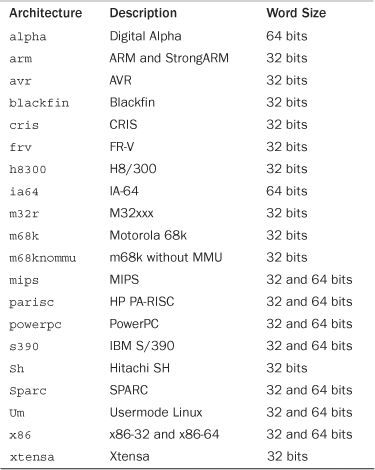
When Linus first unleashed Linux on the unsuspecting world, it ran only on Intel i386 machines. Although the operating system was rather generalized and well written, portability was not a major concern. In fact, Linus even once suggested Linux would never run on anything but the i386 architecture! In 1993, however, work began on porting Linux to the Digital Alpha architecture. The Digital Alpha was a modern high-performance RISC-based architecture with 64-bit memory addressing. This is a stark contrast to Linus’s original 386. Nonetheless, the initial port of Linux to the Alpha took about a year, and the Alpha became the first officially supported architecture after x86. This port was perhaps rather difficult because it had the unwelcome challenge of being the first. Instead of simply grafting support for the Alpha onto the kernel, pieces of the kernel were rewritten as needed with portability in mind.1 Although this made for more work overall, the result was much cleaner and future porting was made much easier.
1 This is a common occurrence in Linux kernel development. If something is going to be done at all, it must be done right. Kernel developers are not averse to rewriting large amounts of code in the name of perfection.
Although the first releases of Linux supported only the Intel i386 architecture, the 1.2 kernel series added support for Digital Alpha, MIPS, and SPARC—although support was somewhat experimental.
With the release of the 2.0 kernel, Linux officially added support for the Motorola 68k and PowerPC. Additionally, the architectures previously supported in 1.2 were labeled official and stable.
The 2.2 kernel series brought even more architecture support with the addition of ARM, IBM S/390, and UltraSPARC. A few years later, 2.4 nearly doubled the number of supported architectures to 15, as support was added for the CRIS, IA-64, 64-bit MIPS, HP PA-RISC, 64-bit IBM S/390, and Hitachi SH.
The current kernel, 2.6, brought the number of supported architectures to 21 with the addition of AVR, FR-V, Motorola 68k without MMU, M32xxx, H8/300, IBM POWER, Xtensa, and a version of the kernel that runs in a virtual machine under Linux, known as Usermode Linux.
Each of these architectures supports various chip and machine types. Some supported architectures, such as ARM and PowerPC, each support many different chips and machine types. Others, such as x86 and SPARC, support both 32-bit and 64-bit variants of their processors. Therefore, although Linux runs under 21 broad architectures, it runs on many more machines!
A word is the amount of data that a machine can process at one time. This fits into the document analogy that includes characters (usually 8 bits) and pages (many words, often 4KB or 8KB worth) as other measurements of data. A word is an integer number of bytes—for example, one, two, four, or eight. When someone talks about the “n-bits” of a machine, they are generally talking about the machine’s word size. For example, when people say that the Intel i7 is a 64-bit chip, they are referring to its word size, which is 64 bits, or eight bytes.
The size of a processor’s general-purpose registers (GPRs) is equal to its word size. The widths of the components in a given architecture—for example, the memory bus—are usually at least as wide as the word size. Typically, at least in the architectures that Linux supports, the virtual memory address space is equal to the word size, although the physical address space is sometimes less. Consequently, the size of a pointer is equal to the word size. Additionally, the size of the C type long is equal to the word size, whereas the size of the int type is sometimes less than that of the word size. For example, the Alpha has a 64-bit word size. Consequently, registers, pointers, and the long type are 64 bits in length. The int type, however, is 32-bits long. The Alpha can access and manipulate 64 bits—one word—at a time.
Words, Doublewords, and Confusion
Some operating systems and processors do not call the standard data size a word. Instead, a word is some fixed size based on history or arbitrary naming decisions. For example, some operating systems might partition data sizes into bytes (8 bits), words (16 bits), double words (32 bits), and quad words (64 bits), despite the fact that the system in question may be 32 bits. Windows NT-based systems, such as Windows 7, employ this naming scheme. In this book—and Linux in general—a word is the standard data size of the processor, as previously discussed.
Each supported architecture under Linux defines BITS_PER_LONG in <asm/types.h> to the length of the C long type, which is the system word size. A full listing of all supported architectures and their word size is in Table 19.1.
Traditionally, Linux implemented 32- and 64-bit variants of a given architecture separately. For example, early in the 2.6 kernel series there existed both i386 & x86-64, mips & mips64, and ppc & ppc64 architectures. An effort, now complete, has unified these architectures under a single directory in arch/, capable of supporting both 32 and 64-bits from a single codebase.
The C standard explicitly leaves the size of the standard variable types up to implementations.2 The uncertainty in the standard C types across architectures is both a pro and a con. On the plus side, the standard types can take advantage of the word size of various architectures, and types need not explicitly specify a size. The size of the C long type is guaranteed to be the machine’s word size. On the downside, however, code cannot assume that the standard C types have any specific size. Furthermore, there is no guarantee that an int is the same size as a long.3
2
With the exception of char, which is always 1 byte.
3
On the 64-bit architectures supported in Linux, in fact, an int and a long are not the same size; an int is 32 bits and a long is 64 bits. Linux’s supported 32-bit architectures define both int and long to 32 bits.
The situation grows even more confusing because there doesn’t need to be a relation between the types in user-space and kernel-space. The sparc64 architecture provides a 32-bit user-space; therefore, pointers and both the int and long types are 32-bit. In kernel-space, however, sparc64 has a 32-bit int type and 64-bit pointers and long types. This is not the norm, however.
Some rules to keep in mind:
• As dictated by the ANSI C standard, a
charis always 1 byte.
• Although there is no rule that the
inttype be 32 bits, it is in Linux on all currently supported architectures.
• The same goes for the
shorttype, which is 16 bits on all current architectures, although no rule explicitly decrees that.
• Never assume the size of a pointer or a
long, which can be either 32 bits or 64 bits on the currently supported machines in Linux.
• Because the size of a
longvaries on different architectures, never assume thatsizeof(int)is equal tosizeof(long).
• Likewise, do not assume that a pointer and an
intare the same size.
Operating systems use a simple mnemonic to describe what sizes their types are. For example, 64-bit Windows is said to be LLP64, which means that long and pointer types are 64 bits. 64-bit Linux systems are LP64: long and pointer types are 64-bit. 32-bit Linux systems are ILP32: int, long, and pointer types are all 32-bit. The mnemonic is useful for showing at a glance what type of operating system implements its word size, because that choice involves a trade off.
Consider ILP64, LP64, and LLP64. In ILP64, the int, long, and pointer types are all 64 bits in size. This makes programming easier because the main C types are the same size (size mismatch between integers and pointers is a frequent source of programming error), but it has the downside that the common integer type is much larger than often needed. In LP64, programmers can use differently sized integer types, but must be mindful that the size of an int type is smaller than that of a pointer. With LLP64, programmers are stuck with both int and long types of the same size and also have to worry about a size mismatch between all integers and pointers. Most programmers greatly prefer LP64, the model Linux employs.
Opaque data types do not reveal their internal format or structure. They are about as “black box” as you can get in C. There is not a lot of language support for them. Instead, developers declare a typedef, call it an opaque type, and hope no one typecasts it back to a standard C type. All use is generally through a special set of interfaces that the developer creates. An example is the pid_t type, which stores a process identification number. The actual size of this type is not revealed—although anyone can cheat and take a peak and see that it is an int. If no code makes explicit use of this type’s size, it can be changed without too much hassle. Indeed, this was once the case: In older Unix systems, pid_t was declared as a short.
Another example of an opaque type is atomic_t. As discussed in Chapter 10, “Kernel Synchronization Methods,” this type holds an integer value that can be manipulated atomically. Although this type is an int, using the opaque type helps ensure that the data is used only in the special atomic operation functions. The opaque type also helps hide the usable size of atomic_t, which was not always the full 32 bits because of architectural limitations on 32-bit SPARC.
Other examples of opaque types in the kernel include dev_t, gid_t, and uid_t.
Keep the following rules in mind when dealing with opaque types:
• Do not assume the size of the type. It might be 32-bit on some systems and 64-bit on others. Moreover, kernel developers are free to change its size over time.
• Do not convert the type back to a standard C type.
• Be size agnostic. Write your code so that the actual storage and format of the type can change.
Some data in the kernel, despite not being represented by an opaque type, requires a specific data type. One example is the flags parameter used in interrupt control, which should always be stored in an unsigned long.
When storing and manipulating specific data, always pay careful attention to the data type that represents the type and use it. It is a common mistake to store one of these values in another type, such as unsigned int. Although this will not result in a problem on 32-bit architectures, 64-bit machines will have trouble.
Often, as a programmer, you need explicitly sized data in your code. This is usually to match external requirements, such as those imposed by hardware, networking, or binary files. For example, a sound card might have a 32-bit register, a networking packet might have a 16-bit field, or an executable file might have an 8-bit cookie. In these cases, the data type that represents the data needs to be exactly the right size.
The kernel defines these explicitly sized data types in <asm/types.h>, which is included by <linux/types.h>. Table 19.2 is a complete listing.
Table 19.2. Explicitly Sized Data Types
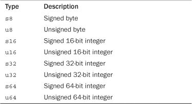
The signed variants are rarely used.
These explicit types are merely typedefs to standard C types. On a 64-bit machine, they may look like this:
typedef signed char s8;
typedef unsigned char u8;
typedef signed short s16;
typedef unsigned short u16;
typedef signed int s32;
typedef unsigned int u32;
typedef signed long s64;
typedef unsigned long u64;
On a 32-bit machine, however, they are likely defined as follows:
typedef signed char s8;
typedef unsigned char u8;
typedef signed short s16;
typedef unsigned short u16;
typedef signed int s32;
typedef unsigned int u32;
typedef signed long long s64;
typedef unsigned long long u64;
These types can be used only inside the kernel, in code that is never revealed to user-space (say, inside a user-visible structure in a header file). This is for reasons of namespace. The kernel also defines user-visible variants of these types, which are simply the same type prefixed by two underscores. For example, the unsigned 32-bit integer type that is safe to export to user-space is __u32. This type is the same as u32; the only difference is the name. You can use either name inside the kernel, but if the type is user-visible, you must use the underscored prefixed version to prevent polluting user-space’s namespace.
The C standard says that the char data type can be either signed or unsigned. It is the responsibility of the compiler, the processor, or both to decide what the suitable default for the char type is.
On most architectures, char is signed by default and thus has a range from –128 to 127. On a few other architectures, such as ARM, char is unsigned by default and has a range from 0 to 255.
For example, on systems where a char is by default unsigned, this code ends up storing 255 instead of –1 in i:
char i = -1;
On other machines, where char is by default signed, this code correctly stores –1 in i. If the programmer’s intention is to store –1, the previous code should be
signed char i = -1;
And if the programmer really intends to store 255, the code should read
unsigned char = 255;
If you use char in your code, assume it can be either a signed char or an unsigned char. If you need it to be explicitly one or the other, declare it as such.
Alignment refers to a piece of data’s location in memory. A variable is naturally aligned if it exists at a memory address that is a multiple of its size. For example, a 32-bit type is naturally aligned if it is located in memory at an address that is a multiple of 4 (that is, its lowest 2 bits are zero). Thus, a data type with size 2n bytes must have an address with the n least significant bits set to zero.
Some architectures have stringent requirements on the alignment of data. On some systems, usually RISC-based ones, a load of unaligned data results in a processor trap (a handled error). On other systems, accessing unaligned data works but results in a degradation of performance. When writing portable code, alignment issues must be avoided, and all types should be naturally aligned.
The compiler generally prevents alignment issues by naturally aligning all data types. In fact, alignment issues are normally not major concerns of the kernel developers—the gcc developers worry about them so other programmers need not. Issues arise, however, when a programmer plays too closely with pointers and accesses data outside the environment anticipated by the compiler.
Accessing an aligned address with a recast pointer of a larger-aligned address causes an alignment issue (whatever that might mean for a particular architecture). That is, this is bad news:
char wolf[] = "Like a wolf";
char *p = &wolf[1];
unsigned long l = *(unsigned long *)p;
This example treats the pointer to a char as a pointer to an unsigned long, which might result in the 32- or 64-bit unsigned long value being loaded from an address that is not a multiple of 4 or 8, respectively.
This sort of convoluted access might look obscure, and it usually is. Nevertheless, it comes up; so be careful. The real-world examples are generally not so obvious or convoluted.
As mentioned, the aligned address of a standard data type is a multiple of the size of that data type. Nonstandard (complex) C types have the following alignment rules:
• The alignment of an array is the alignment of the base type; thus, each element is further aligned correctly.
• The alignment of a
unionis the alignment of the largest included type.
• The alignment of a structure is such that an array of the structure will have each element of the array properly aligned.
Structures also introduce padding, which introduces other issues.
Structures are padded so that each element of the structure is naturally aligned. This ensures that when the processor accesses a given element in the structure, that element is aligned. For example, consider this structure on a 32-bit machine:
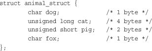
The structure is not laid out exactly like this in memory because the natural alignment of the structure’s members is insufficient. Instead, the compiler creates the structure such that in memory, the struct resembles the following:
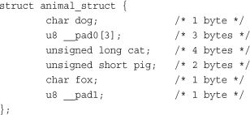
The padding variables exist to ensure proper natural alignment. The first padding provides a 3-byte waste-of-space to place cat on a 4-byte boundary. This automatically aligns the remaining types because they are all smaller than cat. The second and final padding is to pad the size of the struct. The extra byte ensures the structure is a multiple of 4, and thus each member of an array of this structure is naturally aligned.
Note that sizeof(animal_struct) returns 12 for either of these structures on most 32-bit machines. The C compiler automatically adds this padding to ensure proper alignment.
You can often rearrange the order of members in a structure to obviate the need for padding. This gives you properly aligned data without the need for padding and therefore a smaller structure:
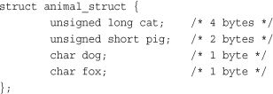
This structure is only 8 bytes in size. It might not always be possible to rearrange structure definitions, however. For example, if this structure were specified as part of a standard or already used in existing code, its order is set in stone, although such requirements are less common in the kernel (which lacks a formal ABI) than user-space. Often, you might want to use a specific order for other reasons—for example, to best lay out variables to optimize cache behavior. Note that ANSI C specifies that the compiler must never change the order of members in a structure4—it is always up to you, the programmer. The compiler can help you out, however: The -Wpadded flag instructs gcc to generate a warning whenever padding is added to a structure.
4 If the compiler could arbitrarily change the order of items in a structure, any existing code using the structure would break. In C, functions calculate the location of variables in a structure simply by adding offsets to the base address of the structure.
Kernel developers need to be aware of structure padding when using structures wholesale—that is, when sending them out over the network or when saving a structure directly to disk, because the required padding might differ among various architectures. This is one reason C does not have a native structure comparison operator. The padding in a structure might contain gibberish, and it is not possible to do a byte-by-byte comparison of one structure to another. The C designers (correctly) felt it is best for the programmer to write a comparison function unique to each situation, taking advantage of the structure’s layout.
Byte ordering is the order of bytes within a word. Processors can number the bytes in a word such that the least significant bit is either the first (left-most) or last (right-most) value in the word. The byte ordering is called big-endian if the most significant byte is encoded first, with the remaining bytes decreasing in significance. The byte ordering is called little-endian if the least significant byte is encoded first, with the remaining bytes growing in significance.
Never assume any given byte ordering when writing kernel code (unless you are writing code for a specific architecture, of course). The Linux kernel supports machines of both byte orders—including machines that can select from either ordering upon boot—and generic code must be compatible with either.
Figure 19.1 is an example of a big-endian byte ordering. Figure 19.2 is an example of a little-endian byte ordering.
Figure 19.1. Big-endian byte ordering.
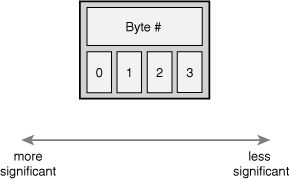
Figure 19.2. Little-endian byte ordering.
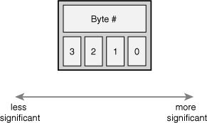
The x86 architecture, in both 32- and 64-bit variants, is little-endian. Most other architectures are big-endian.
Let’s look at what this encoding means in practice. Consider the number 1027, stored as a four-byte integer in binary:
00000000 00000000 00000100 00000011
The internal storage in memory is different on big- versus little-endian, as shown in Table 19.3.
Table 19.3. Big Versus Little Endian
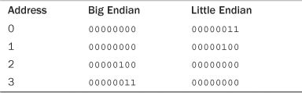
Notice how the big-endian architecture stores the most significant bytes in its smallest address. This is the exact inverse of little-endian.
As a final example, here is a simple code snippet to test whether a given architecture is big- or little-endian:
int x = 1;
if (*(char *)&x == 1)
/* little endian */
else
/* big endian */
This works either in user-space or inside the kernel.
History of Big- and Little-Endian
The terms big-endian and little-endian derive from Jonathan Swift’s 1726 satirical novel, Gulliver’s Travels. In the novel, the fictional Lilliputians’ major political issue is whether eggs should be cracked open on the big end or the little end. Those who favor the big end are big-endians, whereas those who favor the small are little-endians.
The similarity between the Lilliputians and our big-endian versus little-endian debate is that the argument is rooted deeper in politics than technical merits.
Each supported architecture in Linux defines one of __BIG_ENDIAN or __LITTLE_ENDIAN in <asm/byteorder.h> in correspondence to the machine’s byte order.
This header file also includes a family of macros from include/linux/byteorder/, which help with conversions to and from the various orderings. The most commonly needed macros are
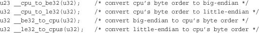
These convert from one byte order to another. In the case that the orders are the same (for example, if converting from native ordering to big-endian, and the processor is big-endian), the macros do nothing. Otherwise, they return the converted value.
The measurement of time is another kernel concept that can differ between architectures or even kernel revisions. Never assume the frequency of the timer interrupt or the number of jiffies per second. Instead, always use HZ to scale your units of time correctly. This is important because not only can the timer frequency differ among the various architectures, but it can also change on a given architecture from one kernel release to the next.
For example, HZ is 100 on the x86 platforms. That is, the timer interrupt occurs 100 times per second, or every 10 milliseconds. Earlier in the 2.6 kernel series, however, HZ was 1000 on x86. On other architectures, the value differs: Alpha has HZ equal to 1024 and ARM has it equal to 100.
Never simply compare jiffies to a number such as 100 and assume that always means the same thing. To scale time appropriately, multiply or divide by HZ. For example
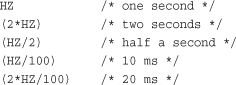
HZ is defined in <asm/param.h>. The subject is discussed further in Chapter 10.
When working with pages of memory, never assume the page size. It is a common mistake for x86-32 programmers to assume that the page size is 4KB. Although this is true on x86-32 machines, other architectures have different sizes. Some architectures support multiple page sizes, in fact! Table 19.4 lists each support architecture’s valid page size(s).
Table 19.4. Architecture Page Size(s)
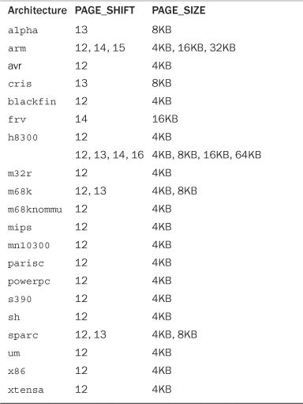
When working with pages of memory, use PAGE_SIZE as the size of a page, in bytes. The value PAGE_SHIFT is the number of bits to left-shift an address to derive its page number. For example, on x86-32 with 4KB pages, PAGE_SIZE is 4096 and PAGE_SHIFT is 12. These values are defined in <asm/page.h>.
Recall from Chapter 9, “An Introduction to Kernel Synchronization,” and Chapter 10 that architectures have varying degrees of processor ordering. Some have strict ordering constraints in which all loads and stores occur in the order prescribed by the code. Other chips have weak ordering, and loads and stores are reordered as the processor sees fit.
In your code, if you depend on data ordering, ensure that even the weakest ordered processor commits your load and stores in the right order by using the appropriate barriers, such as rmb() and wmb(). Chapter 10 has more information.
It might seem somewhat incorrect to include symmetrical multiprocessing, kernel preemption, and high memory in a discussion of portability. After all, these are not machine characteristics that affect an operating system, but instead they are features of the Linux kernel that are indeed somewhat architecture-agnostic. They represent, however, important configuration options that you should always assume are available in your code. That is, always program for an SMP/preempt/highmem system and you will always be safe, in any configuration. In addition to the previous portability rules, you need to follow these as well:
• Always assume your code will run on an SMP system and use appropriate locking.
• Always assume your code will run with kernel preemption enabled and use appropriate locking and kernel preemption statements.
• Always assume your code will run on a system with high memory (memory not permanently mapped) and use
kmap()as needed.
Writing portable, clean, proper code for the Linux kernel has two major implications:
• Always code for the greatest common factor: Assume anything can happen and any potential constraint is in place.
• Always assume that only the lowest common denominator is available: Do not assume any given kernel feature is available and require only the minimum architectural features.
Writing portable code requires awareness of many issues, including wordsize, data type size, alignment, padding, byte order, signedness, endianness, page size, and processor load/store ordering. In the majority of kernel programming, the primary concern is in ensuring that data types are used correctly. Nonetheless, one day an archaic architecture issue will arise, so it is important to understand portability issues and always write clean, portable code inside the kernel.